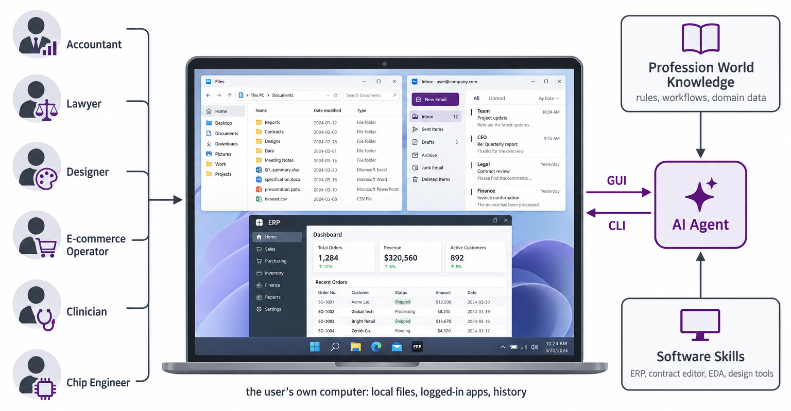

三、课题研究内容
□ 研究三（一）：职业化个人智能体（Professional Personal Agent）—— 研究三主体（待完成）
应用
GUI
CLI
■ 问题：dots、Muse、Manus 等产品侧重记忆与偏好适配，多在云端通用环境执行；对个人电脑环境、职业业务知识与专业软件技能的支持仍有限

职业化个人智能体：个人电脑环境 × 职业知识 × 软件技能（示意图）
RQ ① 个人环境与职业知识能否构造为可扩展、可验证的训练环境？ ② 在其上训练能否提升职业任务表现并跨职业泛化？
① 业务应用仿真（App Mock）
以研究二的复刻能力把 ERP、电商后台、合同审阅等构建为可交互、可重置的个人电脑仿真环境
② 真实数据驱动的环境模拟
以脱敏 / 合成业务数据驱动状态与事件，支持跨应用长程任务；不接触真实用户账户
③ SFT 与 RL 任务流水线
任务生成 → 轨迹 → 以数据库状态校验为主的验证器 → SFT 数据 / RL 奖励
范围 重点研究财务、电商运营、法律中的 2–3 类职业，其余职业留出用于跨职业评估
指标 状态通过率 · 过程审计分 · 未见职业泛化 · 仿真与真实软件成功率差
基线 通用 CUA 模型 · 仅 CLI / 仅 GUI · 无职业数据训练
复用研究一的评测与研究二的训练流程，把可扩展框架推广到职业化个人环境